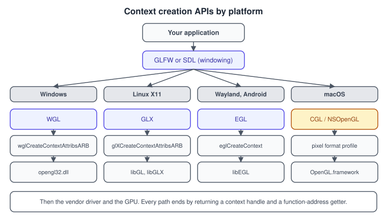
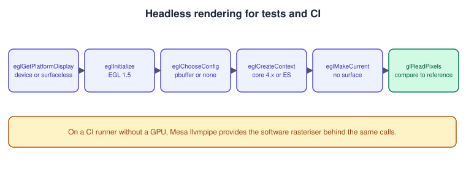

Contexts, Windows and Loaders
|
This content was generated with the assistance of AI and should be verified against the official documentation before being relied on in production. |
OpenGL is a specification of functions, not a library you can link and call. The functions operate on a context, an object that holds all state, and the context is created by a platform-specific API that is not part of OpenGL at all. This page explains what a context is, how each operating system creates one, why you have to fetch function pointers by name at run time, how GLFW and SDL hide all of that and how to render without a window, which is how OpenGL code is tested on build servers.
The general concepts behind this page are in Graphics APIs vs Game Engines.
The facts were checked in November 2026. The versions documented are OpenGL 4.6 and OpenGL ES 3.2 with EGL 1.5, accessed from C++20 with GLFW 3.4 or later, SDL 3 and glad2. Platforms are Windows, Linux (X11, Wayland and headless), macOS and, for EGL, Android and embedded boards. The first program that uses all of this is in Getting Started on the Desktop; the EGL API in depth is in EGL.
What a context is
A context is the state machine of OpenGL: the bound buffers, textures, programs and framebuffers, the enabled capabilities, the error flag and the objects you created. Every GL function acts on the context that is current on the calling thread. Without a current context, calls have no defined effect; with glad2 they usually crash because the function pointers have not been loaded.
Rules that follow from this definition:
-
A context is current on at most one thread at a time, and a thread has at most one current context. Making a context current on another thread first requires releasing it on the first (
glfwMakeContextCurrent(nullptr)). GL calls from a thread that has no current context are undefined; this is the classic cause of "works in main, crashes in loader thread". -
Objects such as buffers and textures are shared only between contexts you explicitly create as a share group (GLFW takes a
sharewindow parameter). Vertex array objects and framebuffer objects are not shared even then, because they are containers of state. -
A context is tied to a drawable (a window surface, or an off-screen pbuffer, or none at all with the surfaceless context extension, core in EGL 1.5). The default framebuffer comes from the drawable.
-
A context has a fixed version, profile and set of flags, chosen at creation (see Versions, Profiles and Extensions).
If you write in Go and call GL through cgo, thread affinity is the first problem to solve, since goroutines move between operating-system threads; the pattern is described in cgo and C Interop.
The platform layers
Each platform defines how a window is paired with a context:
| Platform | API | Notes |
|---|---|---|
Windows |
WGL |
Choose a pixel format ( |
Linux with X11 |
GLX |
|
Linux with Wayland, Android, embedded |
EGL |
|
macOS |
CGL and Cocoa ( |
A pixel format with a profile attribute selects between the 2.1 legacy, 3.2 core and 4.1 core profiles. OpenGL is deprecated here since macOS 10.14; see OpenGL in 2026. |

GLFW supports WGL, GLX, CGL (through Cocoa) and EGL as context creation APIs, selectable with the GLFW_CONTEXT_CREATION_API
hint, and can also use OSMesa for off-screen software contexts. On Linux GLFW can run on X11 or Wayland; with X11 and the native API
it uses GLX, with Wayland it uses EGL.
Why a loader exists
When you link against opengl32.dll (Windows), libGL (Linux) or the OpenGL framework (macOS), you get only the functions of the
platform’s entry-point table, which on Windows is OpenGL 1.1. Every later function, from glCreateShader to glDispatchCompute,
must be fetched from the driver for the current context:
-
wglGetProcAddresson Windows (it fails with a null or small invalid pointer value for functions that live inopengl32.dll, which must then be fetched withGetProcAddress); -
glXGetProcAddresson X11; -
eglGetProcAddressfor EGL (EGL 1.5 allows it to return core functions too; earlier versions only extensions); -
dlsym-style lookup, orglfwGetProcAddress/SDL_GL_GetProcAddress, which wrap the right call per platform.
Pointers returned for one context are not guaranteed to work with another context of a different pixel format or version, so a loader must be called after the context is current. A loader is generated or hand-written code that calls these lookups for every function you intend to use and stores the pointers.
| Loader | Notes |
|---|---|
glad2 |
Generator: you pick the API, version, profile and extensions, and it writes a small C file and headers. No run-time dependencies,
works with any |
GLEW, gl3w, libepoxy, glbinding |
Older or alternative loaders with the same job. GLEW is a large pre-built library; gl3w generates a core-profile loader; libepoxy loads lazily; glbinding offers a C++ interface. |
The system header |
Works only for the 1.1 subset on Windows and for whatever the platform exposes elsewhere; do not rely on it. |
Mistakes that come up repeatedly: loading before a context is current, loading on one thread and calling on another with a
different context, and generating a loader for a version higher than the context and then calling a function that is null (the
guard is if (GLAD_GL_VERSION_4_5) { ... } or a null check).
GLFW and SDL
Both libraries create the window and context, loop over events and give you the address function. They differ in scope:
| GLFW | SDL | |
|---|---|---|
Focus |
Windows and OpenGL, ES and Vulkan contexts, input |
Windows, rendering, audio, controllers, file access and more |
Context hints |
|
|
Loader address |
|
|
Swap |
|
|
Good when |
You only need a window and a context |
The application also needs audio, game controllers or a ready-made platform layer |
The equivalent start-up with SDL 3 (the context is a separate object, created after the window):
#include <glad/gl.h>
#include <SDL3/SDL.h>
#include <cstdio>
int main() {
if (!SDL_Init(SDL_INIT_VIDEO)) {
std::fprintf(stderr, "SDL_Init failed: %s\n", SDL_GetError());
return 1;
}
SDL_GL_SetAttribute(SDL_GL_CONTEXT_MAJOR_VERSION, 4);
SDL_GL_SetAttribute(SDL_GL_CONTEXT_MINOR_VERSION, 1);
SDL_GL_SetAttribute(SDL_GL_CONTEXT_PROFILE_MASK, SDL_GL_CONTEXT_PROFILE_CORE);
SDL_GL_SetAttribute(SDL_GL_CONTEXT_FLAGS, SDL_GL_CONTEXT_FORWARD_COMPATIBLE_FLAG);
SDL_Window* window = SDL_CreateWindow("Bookshelf GL (SDL)", 1280, 720, SDL_WINDOW_OPENGL | SDL_WINDOW_RESIZABLE);
SDL_GLContext ctx = window ? SDL_GL_CreateContext(window) : nullptr;
if (!ctx) {
std::fprintf(stderr, "No GL context: %s\n", SDL_GetError());
return 1;
}
if (!gladLoadGL(reinterpret_cast<GLADloadfunc>(SDL_GL_GetProcAddress))) {
std::fputs("glad failed\n", stderr);
return 1;
}
SDL_GL_SetSwapInterval(1);
bool running = true;
while (running) {
SDL_Event e;
while (SDL_PollEvent(&e)) {
if (e.type == SDL_EVENT_QUIT) running = false;
}
glClearColor(0.84f, 0.72f, 0.55f, 1.0f);
glClear(GL_COLOR_BUFFER_BIT);
SDL_GL_SwapWindow(window);
}
SDL_GL_DestroyContext(ctx);
SDL_DestroyWindow(window);
SDL_Quit();
return 0;
}Resize handling (SDL_EVENT_WINDOW_PIXEL_SIZE_CHANGED) and keyboard events are left out; they match the GLFW callbacks of the getting-started page. The
rest of this section uses GLFW.
Headless rendering with EGL
A server or build agent often has no display. Code that renders to textures, bakes assets or tests shaders then needs a context without a window. EGL provides this: create a display, a config that supports OpenGL, a context, and make it current with either a tiny pbuffer surface or none at all (surfaceless contexts are part of EGL 1.5).

#include <EGL/egl.h>
#include <glad/gl.h>
#include <cstdio>
#include <cstdlib>
#include <vector>
int main() {
EGLDisplay dpy = eglGetDisplay(EGL_DEFAULT_DISPLAY);
EGLint major = 0, minor = 0;
if (dpy == EGL_NO_DISPLAY || !eglInitialize(dpy, &major, &minor)) {
std::fputs("EGL init failed\n", stderr);
return EXIT_FAILURE;
}
std::printf("EGL %d.%d\n", major, minor);
eglBindAPI(EGL_OPENGL_API); // desktop GL; use EGL_OPENGL_ES_API for ES
const EGLint config_attribs[] = {
EGL_SURFACE_TYPE, EGL_PBUFFER_BIT,
EGL_RENDERABLE_TYPE, EGL_OPENGL_BIT,
EGL_RED_SIZE, 8, EGL_GREEN_SIZE, 8, EGL_BLUE_SIZE, 8, EGL_ALPHA_SIZE, 8,
EGL_NONE};
EGLConfig config;
EGLint count = 0;
if (!eglChooseConfig(dpy, config_attribs, &config, 1, &count) || count < 1) {
std::fputs("No suitable EGL config\n", stderr);
return EXIT_FAILURE;
}
const EGLint pbuffer_attribs[] = {EGL_WIDTH, 64, EGL_HEIGHT, 64, EGL_NONE};
EGLSurface surface = eglCreatePbufferSurface(dpy, config, pbuffer_attribs);
const EGLint context_attribs[] = {
EGL_CONTEXT_MAJOR_VERSION, 4,
EGL_CONTEXT_MINOR_VERSION, 1,
EGL_CONTEXT_OPENGL_PROFILE_MASK, EGL_CONTEXT_OPENGL_CORE_PROFILE_BIT,
EGL_NONE};
EGLContext ctx = eglCreateContext(dpy, config, EGL_NO_CONTEXT, context_attribs);
if (ctx == EGL_NO_CONTEXT || !eglMakeCurrent(dpy, surface, surface, ctx)) {
std::fputs("Context creation failed\n", stderr);
return EXIT_FAILURE;
}
if (!gladLoadGL(reinterpret_cast<GLADloadfunc>(eglGetProcAddress))) return EXIT_FAILURE;
std::printf("Renderer: %s\n", glGetString(GL_RENDERER));
// Render something deterministic into the default framebuffer (the pbuffer) and read it back.
glViewport(0, 0, 64, 64);
glClearColor(0.84f, 0.72f, 0.55f, 1.0f);
glClear(GL_COLOR_BUFFER_BIT);
std::vector<unsigned char> pixels(64 * 64 * 4);
glPixelStorei(GL_PACK_ALIGNMENT, 1);
glReadPixels(0, 0, 64, 64, GL_RGBA, GL_UNSIGNED_BYTE, pixels.data());
std::printf("First pixel: %d %d %d %d\n", pixels[0], pixels[1], pixels[2], pixels[3]);
eglMakeCurrent(dpy, EGL_NO_SURFACE, EGL_NO_SURFACE, EGL_NO_CONTEXT);
eglDestroyContext(dpy, ctx);
eglDestroySurface(dpy, surface);
eglTerminate(dpy);
return EXIT_SUCCESS;
}Link with -lEGL (and the glad library). A test harness compares the pixels against a stored reference with a small tolerance,
because different GPUs round slightly differently.
Software rendering on a CI runner
A virtual machine or container without a GPU can still run OpenGL tests through Mesa’s llvmpipe, a software rasteriser that runs
on the CPU. Installing Mesa’s EGL and GL packages is enough on most Linux images. Mesa’s environment variables pick the driver;
LIBGL_ALWAYS_SOFTWARE=1 forces software rendering and GALLIUM_DRIVER=llvmpipe selects that driver explicitly. Render times
are far slower than on hardware and the supported version depends on the Mesa release, so a test suite should print the version
from the context (as shown in OpenGL in 2026) and skip tests of features the
software driver does not expose. The same idea is described for Linux boards in
OpenGL on Embedded and Linux.
Performance and robustness notes
-
Context switches are expensive. Calling
eglMakeCurrentorglfwMakeContextCurrentevery frame, or alternating between two contexts, forces the driver to flush state. Use one render thread and one context unless you really need a share group. -
Share groups need synchronisation. Two contexts that share a buffer must use fences (see Sync, Queries and Transform Feedback); a write in one context is not guaranteed visible in the other until flushed and fenced.
-
Context loss. Desktop OpenGL contexts do not normally disappear, but mobile contexts do when the app loses its surface (see OpenGL ES on Android); EGL contexts then need recreating together with every GL object.
-
Multiple monitors and GPUs may pick a different GPU than expected; read
GL_RENDERERto confirm which one you got.
Where older books and tutorials are out of date
| Older material says | What is current |
|---|---|
Context and window setup uses GLUT ( |
GLUT is unmaintained; use GLFW or SDL, which wrap WGL, GLX, EGL and Cocoa and request an explicit version and profile. |
Mac OS X code creates contexts with AGL or the old |
OpenGL is deprecated on macOS since 10.14 and limited to a 4.1 core profile created through the Cocoa pixel-format profile. |
ES 2.0 samples rely on emulators that bundled vendor libraries, with Visual Studio 2005 projects |
Use a native EGL implementation, ANGLE or a desktop GL context with ES compatibility; ES 3.x contexts are available through EGL on current Android and Linux. |
Include |
Only a 1.1 subset is exported on Windows; generate a loader (glad2) after the context is current. |
Mesa implements OpenGL 1.5 only |
Mesa provides modern OpenGL: hardware drivers, llvmpipe for software rendering and Zink over Vulkan. |